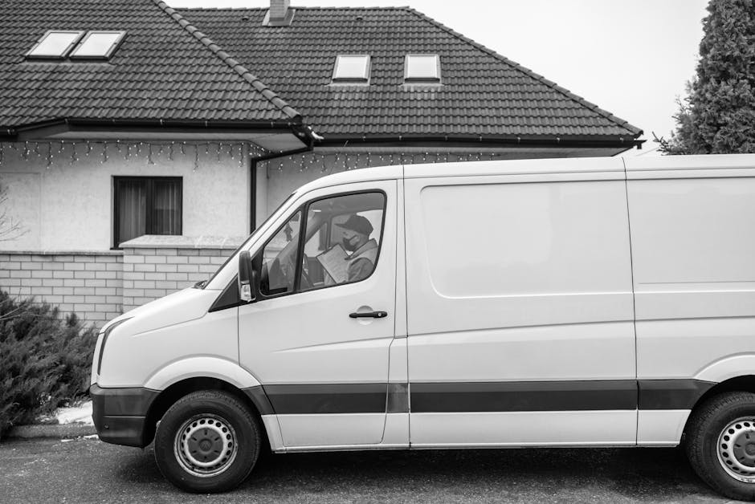
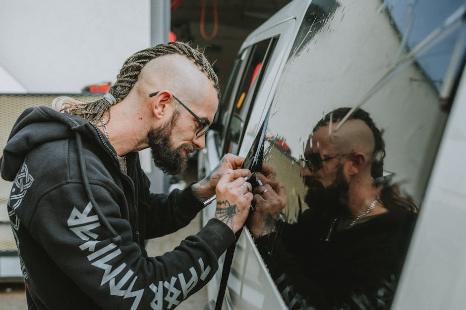

Complete Auto Glass Solutions
We promote comprehensive services to address every type of auto glass damage, from minor chips to full structural replacements.
Windshield Replacement
When damage is too severe for a simple fix, professional windshield replacement restores the structural integrity of your vehicle. Expert technicians ensure a perfect fit using high-quality glass and advanced adhesives.
Windshield Repair & Chip Repair
Don't let a small rock chip turn into a dangerous crack. Prompt windshield repair stops damage from spreading, restores optical clarity, and saves you the cost of a full replacement.
Car Window Replacement
Shattered side or rear windows leave your vehicle vulnerable to weather and theft. Specialized car window replacement services provide swift installation of tempered glass to secure your vehicle immediately.


